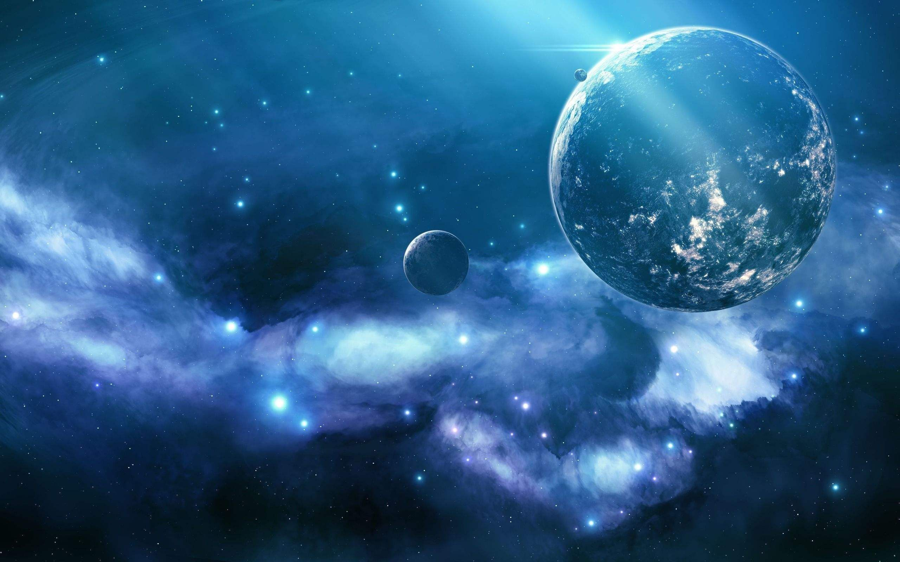
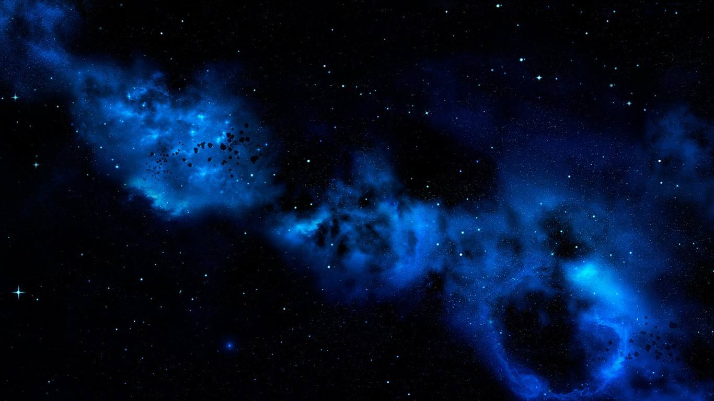
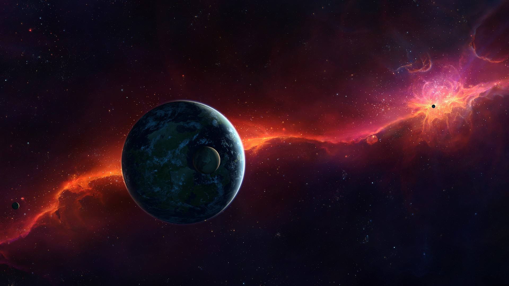

{% extends 'index-base.html' %}

{% block head %}
    <link rel="stylesheet" href="../static/home_page/css/index.css">
    <script  type="text/javascript" src="../static/home_page/js/index.js" defer="defer"></script>
{% endblock %}

{% block content %}
    <div id="main_wrapper">
        <div class="background_p">
            
        </div>
        <div class="picture_box">
            <ul class="picture_list" style="left:0;">
                <li><a href="/"></a></li>
                <li><a href="/"></a></li>
                <li><a href="/"></a></li>
            </ul>
            <div class = "message_box">
                <ul class="dot_list">
                    <li id="selected">1</li>
                    <li>2</li>
                    <li>3</li>

                </ul>
                <div class="text_list">
                    <a id="showed" href="/">星云是由星际空间的气体和尘埃结合成的云雾状天体。星云里的物质密度是很低的，若拿地球上的标准来衡量的话，有些地方是真空的。可是星云的体积十分庞大，常常方圆达几十光年。所以，一般星云比太阳要重得多。</a>
                    <a href="/">星云的形状是多姿多态的。星云和恒星有着“血缘”关系。恒星抛出的气体将成为星云的部分，星云物质在引力作用下压缩成为恒星。在一定条件下，星云和恒星是能够互相转化的。</a>
                    <a href="/">星云的颜色取决于化学组成和被游离的量，由于在星际间的气体绝大部分都是在相对下只要较低能量就能游离的氢，所以许多发射星云都是红色的。如果有更高的能量能造成其他元素的游离，那么绿色和蓝色的云气都有可能出现。经由对星云光谱的研究，天文学家可以推断星云的化学元素。大部分的发射星云都有90%的氢，其余的部份则是氦、氧、氮和其他的元素。</a>
                </div>
            </div>
            <div class="cut_button back_last"></div>
            <div class="cut_button back_next"></div>
        </div>
    </div>
{% endblock %}